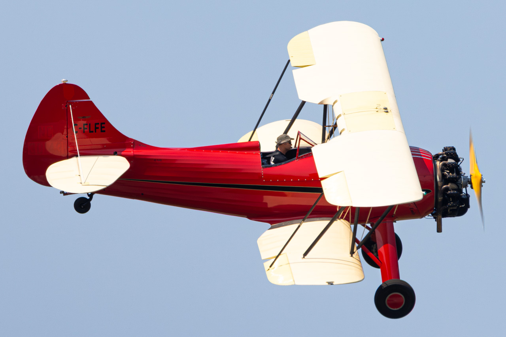
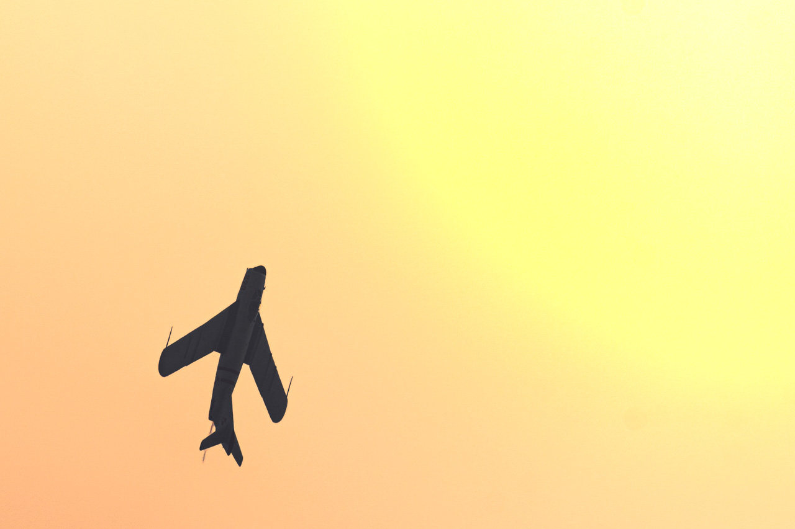
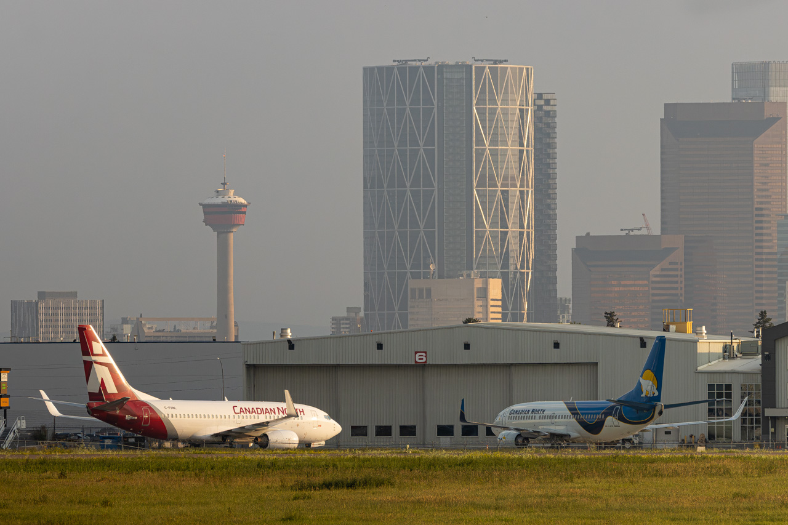
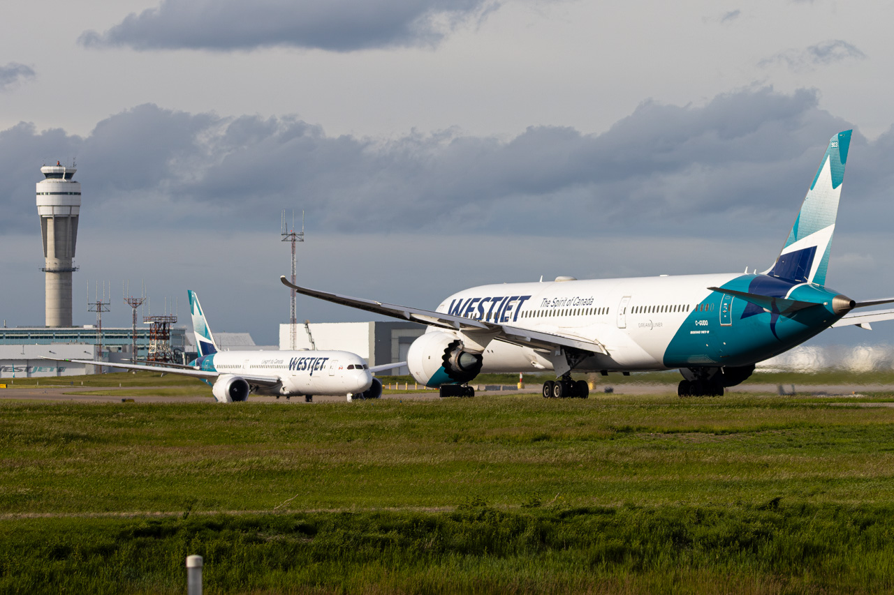

Bring aviation photography into your home, office, or collection with high-quality prints of aircraft and aviation moments.
If you have seen a photograph anywhere on my website, portfolio, or social media that is not currently available below, feel free to contact me. Custom print requests can be discussed for specific aircraft, airlines, airports, or aviation moments.

A Waco UPF-7 performing a display at the Red Deer Airshow in July 2026, showcasing the beauty and history of classic aviation.
Request Print
A MiG-17PF captured during its display at the Red Deer Airshow, crossing in front of the sun to create a dramatic aviation moment.
Request Print
Two Canadian North Boeing 737 aircraft parked with the smoky Calgary skyline creating a unique aviation scene.
Request Print
Two WestJet Boeing 787-9 Dreamliners captured with the Calgary International Airport control tower in the background.
Request PrintLooking for a specific aircraft, airline, airport, or aviation moment? If you have seen one of my photographs that is not listed above, contact me and I can help arrange a custom print request.
Contact Me